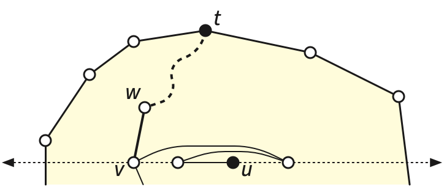
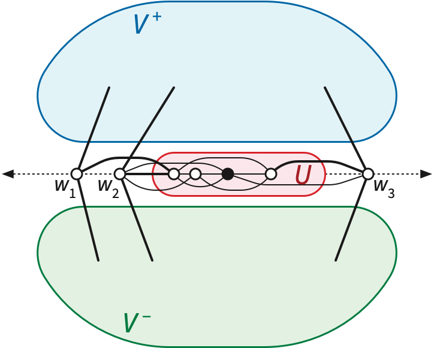
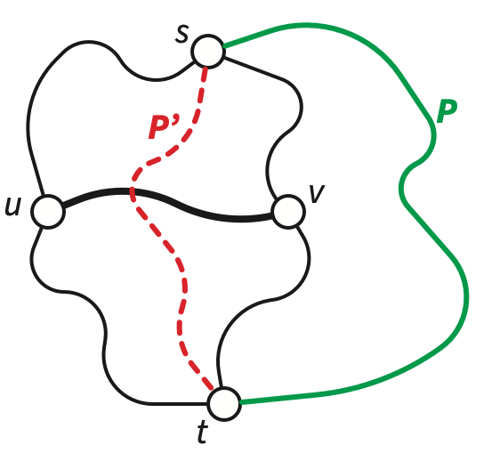
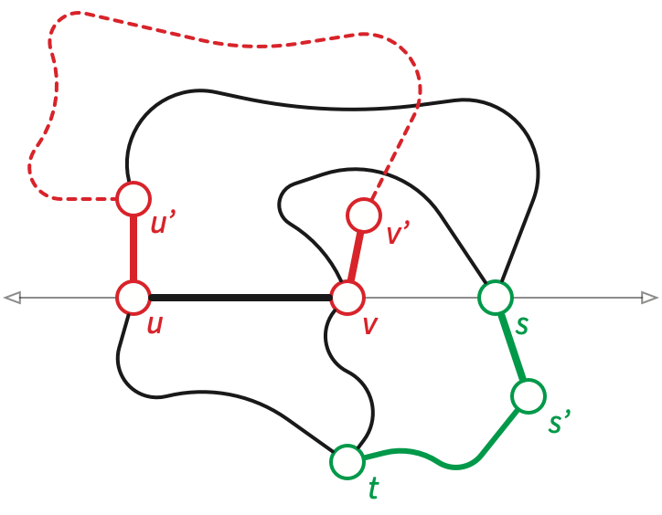
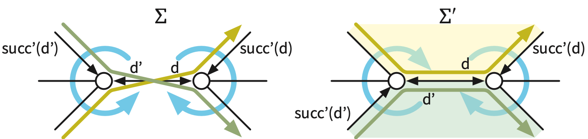

In 1963, William Tutte published a paper ambitiously entitled “How to
Draw a Graph”. Let \(\Sigma\) be any
planar embedding of any simple planar graph \(G\).
Nail the vertices of the outer face of \(\Sigma\) to the vertices of an arbitrary
strictly convex polygon \(P\) in the
plane, in cyclic order.
Build the edges of \(G\) out of
springs or rubber bands.
Let go!
Tutte proved that if the input graph \(G\) is sufficiently well-connected, then
this physical system converges to a strictly convex planar
embedding of \(G\)!
Let me state the parameters of the theorem more precisely, in
slightly more generality than Tutte did.1 A
Tutte drawing of a planar graph \(G\) is described by a position
function \(p\colon V\to \mathbb{R}^2\)
mapping the vertices to points in the plane, subject to the two
conditions:
The vertices of the outer face \(f_\infty\) of some planar embedding of
\(G\) are mapped to the vertices of a
strictly convex polygon in cyclic order. In particular, the boundary of
\(F_\infty\) must be a simple
cycle.
Each vertex \(v\) that is not in
\(f_\infty\) maps to a point in the
interior of the convex hull of its neighbors; that is, we have \[\sum_{u\mathord\to v} \lambda_{u\mathord\to v}
(p_v - p_u) = 0\] for some positive real coefficients \(\lambda_{u\mathord\to v}\) on the darts
into \(v\).
(I will use subscript notation \(p_v\) instead of function notation \(p(v)\) throughout this chapter.) The edges
of a Tutte drawing are line segments connecting their endpoints. Let me
emphasize that that the definition of a Tutte drawing does not
require mapping edges to disjoint segments, or even mapping
vertices to distinct points. Moreover, the dart coefficients
are not required to be symmetric; it is possible that \(\lambda_{u\mathord\to v} \ne \lambda_{v\mathord\to
u}\).
A graph \(G\) is
3-connected if we can delete any two vertices without
disconnecting the graph, or equivalently (by Menger’s theorem) if every
pair of vertices is connected by at least three vertex-disjoint
paths.
Finally, a planar embedding is strictly convex if the
boundary of every face of the embedding is a convex polygon, and no two
edges on any face boundary are collinear.
Tutte’s spring-embedding theorem:
Every Tutte drawing of a simple 3-connected planar graph \(G\) is a strictly convex straight-line
embedding.
It is not hard to see that 3-connectivity is required. If \(G\) has an articulation vertex \(v\), that is, a vertex whose deleting
leaves a disconnected subgraph, then a Tutte drawing of \(G\) can map an entire component of \(G\setminus v\) to the point \(p_v\). Similarly, if \(G\) has two vertices \(v\) and \(v\) such that \(G\setminus \{u,v\}\) is disconnected, a
Tutte drawing of \(G\) can map an
entire component of \(G\setminus
\{u,v\}\) to the line segment \(p_up_v\). In both cases, the Tutte drawing
is not even an embedding, much less a strictly convex embedding.
12.1 Outer Face is Outer
Whitney (1932) proved that every simple 3-connected graph \(G\) has a unique embedding on the sphere
(up to homeomorphism), or equivalently, a unique planar rotation system.
I will describe Whitney’s proof later in this note. Thus, in every
planar embedding of \(G\), the faces
are bounded by the same set of cycles; we can reasonably call these
cycles the faces of \(G\).
The definition of a Tutte drawing requires choosing one of the faces
of \(G\) to be the outer face \(f_\infty\). We call the vertices of \(f_\infty\)boundary vertices, and
the remaining vertices of \(G\)interior vertices. Similarly, we call the edges of \(f_\infty\)boundary edges, and the
remaining edges of \(G\)interior edges. This terminology is justified by the following
observation:
Outer face lemma:
In every Tutte drawing of a simple 3-connected planar graph \(G\), every interior vertex maps to a point
in the interior of the outer face. In particular, no interior vertex
maps to the same point as a boundary vertex.
Proof:
We say that an interior vertex \(w\)directly reaches a boundary vertex \(z\), or symmetrically that \(z\) is directly reachable from
\(w\), if there is a path from \(w\) to \(z\) using only interior edges.
3-connectivity implies that every interior vertex of \(G\) can directly reach at least three
boundary vertices of \(G\).
We prove the lemma by applying Gaussian elimination to the system of
linear equations defined by condition (2). Linear system (2) expresses
the position \(p_v\) of any vertex
\(v\) as a strict convex combination of
the positions of its neighbors in \(G\), that is, a weighted average where
every neighbor of \(v\) has positive
weight. By pivoting on that row, we can remove the variables \(p_v\) from the system.
Such a pivot is equivalent to deleting vertex \(v\) from the graph and adding new edges
between the neighbors of \(v\), with
appropriate positive coefficients on their darts.2 (Of
course the resulting graph may not be planar.) Pivoting out one interior
vertex does not change which boundary vertices are directly reachable
from any other interior vertex. Thus, if we eliminate all but one
interior vertex \(w\), the remaining
constraint expresses \(w\) as a strict
convex combination of at least three boundary vertices.
The same elimination argument implies that every assignment
of positive dart coefficients \(\lambda_{u\mathord\to v} > 0\) defines a
unique Tutte drawing; the linear system containing the equation
\[\sum_{u\mathord\to v} \lambda_{u\mathord\to
v} (p_v - p_u) = 0\] for every interior vertex \(v\) always has full rank.
12.2 Laplacian linear systems and
energy minimization
Tutte’s original formulation required that every interior vertex lie
at the center of mass of its neighbors; this is equivalent to requiring
\(\lambda_{u\mathord\to v} = 1\) for
every dart \(u\mathord\to v\).3 More generally, the physical
interpretation in terms of springs corresponds to the special case where
dart coefficients are symmetric.
Suppose each edge \(uv\) is to a
(first-order linear) spring with spring constant \(\omega_{uv} = \lambda_{u\mathord\to v} =
\lambda_{v\mathord\to u}\). For any vertex placement \(p \in (\mathbb{R}^2)^V\), the total
potential energy in the network of springs is \[
\Phi(p) := \frac{1}{2} \sum_{u, v}
\omega_{uv} \| p_u - p_v \|^2.
\] If we fix the positions of the outer vertices, \(\Phi\) becomes a strictly convex4 function of the interior vertex
coordinates. If we let the interior vertex positions vary, the network
of springs will come to rest at a configuration with locally minimal
potential energy. The unique minimum of \(\Phi\) can be computed by setting the
gradient of \(\Phi\) to the zero vector
and solving for the interior coordinates; thus we recover the original
linear constraints \[
\sum_v \omega_{uv} (p_u - p_v) = 0
\] for every interior vertex \(u\). The underlying matrix of this linear
system is called a weighted Laplacian matrix of \(G\). This matrix is positive definite5 and therefore non-singular, so a
unique equilibrium configuration always exists.
When the dart coefficients are not symmetric, this physical intuition
goes out the window; the linear system of balance equations is no longer
the gradient of a convex function. Nevertheless, as we’ve already
argued, any choice of positive coefficients \(\lambda_{u\mathord\to v}\) corresponds to a
unique straight-line drawing of \(G\).
None of the actual proof of Tutte’s theorem relies on any special
properties of the coefficients \(\lambda_{u\mathord\to v}\) other than
positivity.
Given the graph \(G\), the outer
convex polygon, and the dart coefficients, we can compute the
corresponding vertex positions in \(O(n^3)\) time via Gaussian elimination.
(There are faster algorithms to solve this linear system. In particular,
a numerically approximate solution can be computed in \(O(n\log n)\) time in theory, or in \(O(n\,\text{poly}\!\log n)\) time in
practice.)
12.3 Slicing with Lines
For the rest of this note, fix a simple 3-connected planar graph
\(G\) and a Tutte drawing \(p\). At the risk of confusing the reader, I
will generally not distinguish between features of the abstract graph
\(G\) (vertices, edges, faces, cycles,
paths, and so on) and their images under the Tutte drawing (points, line
segments, polygons, polygonal chains, and so on). For example, an
edge of the Tutte drawing \(p\) is the (possibly degenerate) line
segment between the images of the endpoints of an edge of \(H\), and a face of the Tutte
drawing \(p\) is the (not necessarily
simple) polygon whose vertices are the images of the vertices of a face
of \(G\) in cyclic order.
Both sides lemma:
For any interior vertex \(v\) and
any line \(\ell\) through \(p_v\), either all neighbors of \(v\) lie on \(\ell\), or \(v\) has neighbors on both sides of \(\ell\).
Proof:
Suppose all of \(v\)’s neighbors lie in
one closed halfplane bounded by \(\ell\). Then the convex hull of \(v\)’s neighbors also lies in that
halfspace, which implies that \(v\)
does not lie in the interior of that convex hull, contradicting the
definition of a Tutte drawing. \(\qquad\square\)
Halfplane lemma:
Let \(H\) be any halfplane that
contains at least one vertex of \(G\).
The subgraph of \(G\) induced by all
vertices in \(H\) is connected.
Proof:
Without loss of generality, assume that \(H\) is the halfplane above the \(x\)-axis. Let \(t\) be any vertex with maximum \(y\)-coordinate; the outer face lemma
implies that \(t\) is a boundary
vertex. I claim that for any vertex \(u\in
H\), there is a directed path in \(G\) from \(u\) to \(t\), where the \(y\)-coordinates never decrease. There are
two cases to consider:
If \(t\) and \(u\) have the same \(y\)-coordinate, the outer-face lemma
implies that either \(t=u\) or \(tu\) is an edge of the outer face. In
either case the claim is trivial.
Otherwise, \(u\) must lie below
\(t\). Let \(U\) be the set of all vertices reachable
from \(u\) along horizontal edges of
\(G\). Because \(G\) is connected, some vertex \(v\in U\) has a neighbor that is not in
\(U\). The both-sides lemma implies
that \(v\) has a neighbor \(w\) that has larger \(y\)-coordinate than \(v\). The induction hypothesis implies that
there is a \(y\)-monotone path in \(G\) from \(w
\mathord\leadsto t\). Thus, \(u\mathord\leadsto v \mathord\to w \mathord\leadsto
t\) is a \(y\)-monotone path,
which proves the claim. \(\qquad\square\)

The halfplane lemma.
12.4 No Degenerate Vertex
Neighborhoods
None of the previous lemmas actually require the planar graph \(G\) to be 3-connected. The main technical
challenge in proving Tutte’s theorem is showing that if \(G\) is 3-connected, then every Tutte
drawing of \(G\) is non-degenerate. The
assumption of 3-connectivity is necessary6—if
\(G\) is 2-connected but not
3-connected, then some subgraphs of \(G\) can degenerate to line segments in the
Tutte drawing, and if \(G\) is
connected but not 2-connected, some subgraphs of \(G\)will degenerate to single
points.
Utility lemma:
The complete bipartite graph \(K_{3,3}\) is not planar.
Proof:
\(K_{3,3}\) has \(n=6\) vertices and \(m=9\) edges, so by Euler’s formula, any
planar embedding would have exactly \(2+m-n =
5\) faces. On the other hand, because \(K_{3,3}\) is simple and bipartite, every
face in any planar embedding would have degree at least \(4\). Thus, a planar embedding of \(K_{3,3}\) would imply \(20 = 4f \le 2m = 18\), which is obviously
impossible.\(\qquad\square\)
Nondegeneracy lemma:
No vertex of \(G\) is collinear
with all of its neighbors.
Proof:
By definition, no three boundary vertices are collinear, and thus no
boundary vertex is collinear with all of its neighbors.
For the sake of argument, suppose some vertex \(u\) and all of its neighbors lies on a
common line \(\ell\), which without
loss of generality is horizontal. Let \(V^+\) and \(V^-\) be the subsets of vertices above and
below \(\ell\), respectively. Let \(U\) be the set of all vertices that are
reachable from \(u\) and whose
neighbors all lie on \(\ell\). The
halfplane lemma implies that the induced subgraphs \(G[V^+]\) and \(G[V^-]\) are connected, and the induced
subgraph \(G[U]\) is connected by
definition. Fix arbitrary vertices \(v^+\in
V^+\) and \(v^-\in V^-\).
Finally, let \(W\) denote the set of
all vertices that lie on line \(\ell\)
and are adjacent to vertices in \(U\),
but are not in \(U\) themselves. Every
vertex in \(W\) has at least one
neighbor not in \(\ell\), so by the
both-sides lemma, every vertex in \(W\)
has neighbors in both \(V^+\) and \(V^-\). Deleting the vertices in \(W\) disconnects \(U\) from the rest of the graph. Thus,
because \(G\) is
3-connected, \(W\) contains at
least three vertices \(w_1, w_2,
w_3\).
Now suppose we contract the induced subgraphs \(G[V^+]\), \(G[V^-]\), and \(G[U]\) to the vertices \(v^+\), \(v^-\), and \(u\), respectively. The resulting minor of
\(G\) contains the complete bipartite
graph \(\{v^+, v^-, u\}\times \{w_1, w_2,
w_3\} = K_{3,3}\). But this is impossible, because \(G\) is planar and therefore every
minor of \(G\) is planar. \(\qquad\square\)

A collinear vertex neighborhood implies a
\(K_{3,3}\) minor.
Both sides redux:
Every interior vertex \(v\) has
neighbors on both sides of any line through \(p_v\).
12.5 No Degenerate Faces
It remains to prove that the faces of the Tutte drawing are
nondegenerate. First we need a combinatorial lemma, similar to Fáry’s
lemma that any simple planar map can be refined into a simple
triangulation.
Geelen’s Lemma:
Let \(uv\) be any edge of \(G\), let \(f\) and \(f’\) be the faces incident to \(uv\), and let \(S\) and \(S’\) be the vertices of these two faces
other than \(u\) and \(v\). Let \(P\) be any path that starts at a vertex in
\(S\) and ends at a vertex of \(S’\). Then every path from \(u\) to \(v\) in \(G\) either consists of the edge \(uv\) or contains a vertex of \(P\).
Proof:
Fix any planar embedding of \(G\) (not
necessarily the Tutte drawing!) where \(uv\) is an interior edge. The faces
incident to \(uv\) are disjoint disks
on either side of \(uv\). Let \(s\) and \(t\) be the endpoints of \(P\). Let \(P’\) be a path from \(l\) to \(r\) through the union of the faces incident
to \(uv\), crossing the edge \(uv\) once. The closed curve \(C = P + P’\) separates \(u\) from \(v\). Thus, by the Jordan curve theorem,
every path \(Q\) from \(u\) to \(v\) crosses \(C\), which implies that either \(Q=uv\) or \(Q\) contains a vertex of \(P\). \(\qquad\square\)

Geelen’s lemma.
Split Faces Lemma:
Let \(uv\) be any interior edge of
\(G\), let \(f\) and \(f’\) be the faces incident to \(uv\), and let \(S\) and \(S’\) be the vertices of these two faces
other than \(u\) and \(v\). Finally, let \(\ell\) be any line through \(p_u\) and \(p_v\). Then \(S\) and \(S’\) lie on opposite sides of \(\ell\); in particular, no vertex in \(S\cup S’\) lies on \(\ell\).
Proof:
Without loss of generality, assume \(\ell\) is horizontal. For the sake of
argument, suppose both \(S\) and \(S’\) contain vertices \(s\) and \(t\) that lie on or below \(\ell\). If \(s\) lies on \(\ell\), the nondegeneracy lemma implies
that \(s\) has a neighbor \(s’\) strictly below \(\ell\); otherwise, let \(s’ = s\). Similarly, if \(t\) lies on \(\ell\), the nondegeneracy lemma implies
that \(t\) has a neighbor \(t’\) strictly below \(\ell\); otherwise, let \(t’ = t\). The halfspace lemma implies that
there is a path \(P’\) in \(G\) from \(s’\) to \(t’\) that lies entirely below \(\ell\). Let \(P\) be the path from \(s\) to \(t\) consisting of the edge \(ss’\) (if \(s\ne
s’\)), the path \(P’\), and the
edge \(t’t\) (if \(t\ne t’\)).
The nondegeneracy lemma also implies that \(u\) and \(v\) have respective neighbors \(u’\) and \(v’\) strictly above \(\ell\), and the halfspace lemma implies
that there is a path \(Q’\) from \(u’\) to \(v’\) that lies strictly above \(\ell\). Let \(Q\) be the path from \(u\) to \(v\) consisting of the edge \(uu’\), the path \(Q’\), and the edge \(v’v\).
The edge \(uv\) and the path \(P\) satisfy the conditions of Geelen’s
lemma. The path \(Q\) clearly avoids
the edge \(uv\), so \(Q\) must cross \(P\). But \(P\) and \(Q\) lie on opposite sides of \(\ell\). We have reached a contradiction,
completing the proof.\(\qquad\square\)

The split faces lemma.
Corollary:
No edge of \(G\) maps to a single
point.
Proof:
Suppose \(p_u=p_v\) for some edge \(uv\). Let \(\ell\) be any line through \(p_u=p_v\) and some other vertex on a face
incident to \(uv\). We immediately have
a contradiction to the previous lemma. \(\qquad\square\)
Convexity lemma:
Every face of \(G\) maps to a
strictly convex polygon.
Proof:
Let \(f\) be any face of \(G\), let \(uv\) be any edge of \(f\), and let \(\ell\) be the unique line containing \(p_u\) and \(p_v\). If \(uv\) is a boundary edge, the outer face
lemma implies that every vertex of \(f\) except \(u\) and \(v\) lies strictly on one side of \(\ell\). Similarly, if \(uv\) is an interior edge, the split faces
lemma implies that every vertex of \(f\) except \(u\) and \(v\) lies strictly on one side of \(\ell\). In particular, no other vertex of
\(f\) lies on the line \(\ell\). It follows that \(uv\) is an edge of the convex hull of \(f\). We conclude that \(f\) coincides with its convex hull. \(\qquad\square\)
Now we are finally ready to prove the main theorem.
Proof:
Call a point generic if it does not lie in the image of the
Tutte drawing. Consider any path from a generic point \(p\) out to infinity that does not pass
through any vertex in the drawing. The split faces lemma implies that
whenever the moving point crosses an edge \(e\), it leaves one face and enters another.
When the moving point reaches infinity, it is only in the outer face.
Thus, every generic point lies in exactly one face.
For the sake of argument, suppose two edges \(uv\) and \(xy\) intersect in the Tutte drawing. Then
any generic point near the intersection \(uv\cap xy\) must lie in two different
faces, which we just showed is impossible. We conclude that the Tutte
drawing is an embedding; in particular, every face is a simple polygon.
We already proved that every face in this embedding is strictly convex.
\(\qquad\square\)
12.6 Whitney’s Uniqueness
Theorem
Tutte’s theorem is as strong as possible in the following sense:
Every planar graph with a strictly convex embedding is 3-connected. This
observation follows from an earlier study of 3-connected planar graphs
by Hassler Whitney.
A planar map is polyhedral if (1) the boundary of every face
is a simple cycle, and (2) the intersection of any two facial cycles is
either empty, a single vertex, or a single edge. Every strictly convex
planar map is polyhedral.
Lemma:Every planar embedding of a 3-connected
planar graph is polyhedral.
Proof:
Fix a planar embedding \(\Sigma\) of
some graph \(G\).
Suppose the boundary of some face \(f\) is not a simple cycle. The boundary of
\(f\) must have a repeated vertex \(v\). So the radial map \(\Sigma^\diamond\) contains a cycle of
length \(2\) through \(v\) and \(f\), which has at least one other vertex of
\(\Sigma\) on either side. It follows
that \(G\setminus v\) must be
disconnected.
Suppose two faces \(f\) and \(g\) have two vertices \(u\) and \(v\) in common, but not the edge \(uv\). Then the radial map \(\Sigma^\diamond\) contains a simple cycle
with vertices \(f, u, g, v\), which has
at least one other vertex of \(G\) on
either side. It follows that \(G\setminus
\{u,v\}\) is disconnected.
We conclude that if \(\Sigma\) is
not polyhedral, then \(G\) is not
3-connected. \(\qquad\square\)
Lemma:If a graph \(G\) has a polyhedral planar embedding, then
\(G\) is 3-connected.
Proof:
Let \(G\) be any graph that is not
3-connected, and let \(\Sigma\) be any
planar embedding of \(G\). Again, there
are two cases to consider:
Suppose \(G\setminus v\) is
disconnected, for some vertex \(v\).
Then the same face of \(\Sigma\) must
be incident to \(v\) twice.
Suppose \(G\setminus \{u,v\}\) is
disconnected, for some vertices \(u\)
and \(v\). We can assume without loss
of generality that \(u\) and \(v\) are not adjacent, since otherwise \(G\setminus u\) is already disconnected.
Then some pair of faces \(f\) and \(g\) must have both \(u\) and \(v\) on their boundaries, but not the edge
\(uv\).
In both cases, we conclude that \(\Sigma\) is not polyhedral. \(\qquad\square\)
Lemma:The dual \(\Sigma^*\) of any polyhedral planar map
\(\Sigma\) is polyhedral.
Proof:
Suppose \(\Sigma\) has a face \(f\) whose boundary is not a simple cycle.
Then the boundary walk of \(f\)
encounters some vertex \(v\) more than
once; in other words, \(v\) and \(f\) are incident more than once. Thus, in
the dual map \(\Sigma^*\), the dual
vertex \(f^*\) and the dual face \(v^*\) are incident more than once, so the
boundary of \(v^*\) is not a simple
cycle.
On the other hand, suppose \(\Sigma\) has two faces \(f\) and \(g\) that share two vertices \(v\) and \(w\), but there is no dart with endpoints
\(v\) and \(w\) and shores \(f\) and \(g\). It follows that the dual faces \(v^*\) and \(w^*\) in \(\Sigma^*\) share the dual vertices \(f^*\) and \(g^*\), but there is no dart with endpoints
\(f^*\) and \(g^*\) and shores \(v^*\) and \(w^*\).
We conclude that if \(\Sigma\) is
not polyhedral, then neither is \(\Sigma^*\). \(\qquad\square\)
Lemma (Whitney):Every planar graph has at most
one polyhedral embedding.
Proof:
Let \(\Sigma\) be a polyhedral planar
embedding of some graph \(G\) (which
must be planar and 3-connected by previous lemmas), and let \(\Sigma'\) be any embedding of \(G\) that is not equivalent to \(\Sigma\). Let \(\textsf{succ}\) and \(\textsf{succ}'\) be the successor
permutations of \(\Sigma\) and \(\Sigma'\), respectively. Because \(\Sigma\) and \(\Sigma'\) are not equivalent, \(\textsf{succ}'\) is not equal to either
\(\textsf{succ}\) or \(\textsf{succ}^{-1}\).
First, suppose there is a dart \(d\)
such that \(\textsf{succ}'(d)\) is
not equal to either \(\textsf{succ}(d)\) or \(\textsf{succ}^{-1}(d)\). In other words,
suppose there is a vertex \(v =
\textsf{head}(d)\) where the cyclic orders of darts into \(v\) in the two embeddings are different.
The darts \(d\) and \(\textsf{succ}'(d)\) split the cycle of
darts around \(v\) into two non-empty
intervals; color the darts in one interval red and the other interval
blue. In particular, color \(\textsf{succ}(d)\) red and color \(\textsf{succ}^{-1}(d)\) blue. There must be
another dart \(d'\) that is red or
blue, whose successor \(\textsf{succ}'(d)\) in \(\Sigma'\) is either blue or red,
respectively.
Let \(C\) be the simple cycle in
\(G\) that bounds face \(f = \textsf{left}'(d) =
\textsf{right}'(\textsf{succ}'(d))\) in \(\Sigma'\). (If the boundary of \(f\) is not a simple cycle, then \(\Sigma'\) is not polyhedral and we are
done.) Similarly, let Let \(C'\) be
the cycle in \(G\) that bounds \(f' = \textsf{left}'(d') =
\textsf{right}'(\textsf{succ}'(d'))\) in \(\Sigma'\). The images of \(C\) and \(C'\) in the polyhedral embedding \(\Sigma\) cross each other at \(v\), and therefore (by the Jordan curve
theorem) share at least one other vertex \(w\). It follows that faces \(f\) and \(f'\) in \(\Sigma'\) share vertices \(v\) and \(w\), but do not share the edge \(vw\) (if that edge exists). We conclude
that \(\Sigma'\) is not
polyhedral.
If two embeddings disagree at a vertex,
at least one embedding is not polyhedral
On the other hand, suppose are two darts \(d\) and \(d'\) such that \(\textsf{succ}'(d) = \textsc{succ}(d)\)
and \(\textsf{succ}'(d')\) or
\(\textsf{succ}^{-1}(d')\). In
other words, suppose the dart order around \(v
= \textsf{head}(d)\) is the same in both embeddings, but the dart
order around \(w = \textsf{head}(d)\)
is reversed from one embedding to the other. Without loss of generality,
\(v\) and \(w\) are adjacent, and we can assume \(d = v\mathord\to w\) and \(d' = \textsf{rev}(d) = w\mathord\to
v\).
Let \(C\) and \(C'\) be the cycles in \(G\) that bound faces \(f = \textsf{left}'(d) =
\textsf{right}'(d')\) and \(f' = \textsf{left}'(d') =
\textsf{right}'(d)\) in \(\Sigma'\), respectively. After an
arbitrarily small perturbation, the images of \(C\) and \(C'\) in the polyhedral embedding \(\Sigma\) cross each other at the midpoint
\(vw\), and therefore share at least
one other vertex \(x\). It follows that
the faces \(f\) and \(f'\) in \(\Sigma'\) have disconnected
intersection, and therefore \(\Sigma'\) is not polyhedral. \(\qquad\square\)

If two embeddings disagree along an edge,
at least one embedding is not polyhedral
Together, the previous lemmas now imply Whitney’s unique-embedding
theorem.
Theorem (Whitney):Every 3-connected planar
graph has a unique planar embedding (up to homeomorphism), which is
polyhedral.
In light of Whitney’s observation, Tutte’s spring-embedding theorem
immediately implies the following corollary:
Convex Embedding Theorem:For every polyhedral
planar embedding, there is an equivalent strictly convex
embedding.
12.7 Not Appearing
Weakly convex faces and internal 3-connectivity
Directed version allowing zero dart weights via “strong
3-connectivity”
Colin de Verdière matrices and spherical spectral embeddings
More spectral graph algorithms!
The formulation and proof of Tutte’s theorem that I’m
presenting here follows a lecture note by Dan Spielman (2018), which is
based on papers by Michael Floater (1997); László Lovász (1999); Steven
Gortler, Craig Gotsman, and Dylan Thurston (2006); and Jim Geelen
(2012).↩︎
This modification is called a star-mesh
transformation; the special case of removing a vertex of degree
\(3\) is called a Y-\(\Delta\) transformation.↩︎
It is sometimes more convenient to formalize Tutte’s
description as \(\lambda_{u\mathord\to v} =
1/\deg(v)\), so that the weights of all darts into each vertex
\(v\) sum to \(1\). This formalization is inconsistent
with the physical spring analogy, but instead treats weights as
transition probabilities of a (backward) random walk. Both
formalizations lead to the same Tutte drawing.↩︎
The Hessian of \(\Phi\)
is positive definite, meaning all of its eigenvalues are positive.↩︎
The Laplacian matrix is just the Hessian of \(\Phi\).↩︎
In fact, we only need the weaker assumption that \(G\) is internally 3-connected,
meaning each interior vertex has three vertex-disjoint paths to the
outer face.↩︎